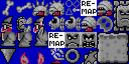
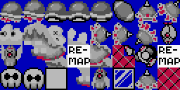
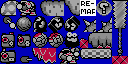
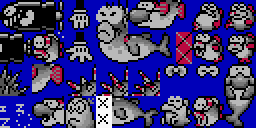
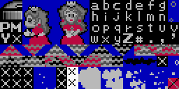
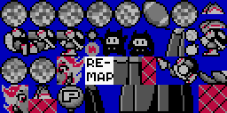

The baserom remaps a bunch of sprites and shuffles some graphics around to fit in some useful sprite and block resources. Below is a breakdown of all of the graphical modifications made to the Vanilla game, if you are interested in seeing what those changes are or want to revert them.
Contents
Edited Graphics
The following is a breakdown of modifications to original graphics files. Originals can be found in the resources/original_graphics folder.
GFX00 : Global Sprite Graphics (SP1)*
- the 8x8 tiles for Mario have been removed as they are now dynamically inserted using the "Mario 8x8 DMA-er" patch.
- tiles for the bounce sprites for the ON/OFF and Note blocks have been moved here.
- 8x8 tiles for lava/podobo splashes, Yoshi's tongue and throat have been moved here.
- a frame for the blue sliding koopa has been moved to GFX01.
- space was reserved for dynamic retry tiles and the Mario 8x8 DMA-er.
GFX01 : Global Sprite Graphics (SP2)*
- Graphic for the donut block sprite replaces the Coin Game Cloud coin tile. Coin Game Cloud has been remapped to use the other sprite coin tile.
- Flopping fish tiles were moved to
GFX13. - Tile for Piranha plant stem was added here, replacing a flopping fish tile.
- A frame for the blue sliding koopa from
GFX00was added here. - Tile for an "ejected" blue koopa has been remapped and Poison Mushroom was added in its place.
GFX08 : Switch Palace (FG3)
- Sunken ship tiles were moved to
GFX1E. - Additional corner tiles for Switch palace foreground were added.
GFX13 : Sprite Tiles (SP3)*
- note block bounce sprite frame moved to
GFX00. - tiles for the flopping fish from
GFX01were added here and the fish was rearranged. - a frame of the hammer has been moved.
- 8x8 tiles for the small note and egg fragment have been moved.
GFX14 : Global Foreground Tiles (FG1)
- Some unused tiles have been replaced with sideways cloud graphics and vertical rope. The turnblock is now a destination for one-ways ExAnimation
GFX16 : Rope Foreground (FG3)
- Tiles for the mushroom platform were shifted so a proper rope corner could be added.
GFX17 : Global Foreground Tiles (FG2)
- a duplicate tile in the door and the unused pressed P-switch tile were replaced with vine ends.
GFX1E : Overworld (FG4)

- The half sunken ship was moved into blank tile space from
GFX08.
GFX29 : Layer 3 tiles (LG2)
- The tile for the "©" symbol from the title screen has been moved to
GFX2Ato make room for the Layer 3 status bar retry indicator.
GFX2A : Layer 3 tiles (LG3)
- The unused graphics for "AND" have been removed, and part of "Nintendo" and the "©" symbol from the title screen has been moved here from
GFX2B.
GFX2B : Layer 3 tiles (LG4)
- The unused graphics for "Super Mario Bros. 4" have been replaced with "Romhack Races Baserom" tiles.
- Part of "Nintendo" has been moved to
GFX2A, and an "8" and "9" tile has been added to make it usable when typing those numbers into info messages.
GFX33 : Global Animation Tiles
- the midway animation frames have been fixed.
- always turning block animation was lightly edited.
- the castle conveyor/stairs have been fixed to use the the castle's brick pattern.
Remapped Graphics
In resources that formerly contained tiles for remapped sprites (namely the lava splash tiles, Yoshi tongue tiles, and the ON/OFF bounce sprite tiles) there will be placeholder graphics in the freed-up space.
GFX03GFX04GFX05GFX06GFX0DGFX0EUnedited versions of these resources can be found in the resources/original_graphics folder.
ExGraphics
ExGFXB54: ExGraphic Version of Big Bush and Pipe (BG2)
- Contains optional tiles for the big bushes and big pipe that can be used as ExGraphics, as well as some alternative pipe corner tiles.
- Must be loaded into slot BG2, and their Map16 Files are found in
resources/map16. See demo level for example.
ExGFXE17: Custom Global Block Tiles (FG2)
- contains all tiles for custom global blocks that use ExGraphics and the global line guide and screen scrolling pipe tiles.
- this resource is arranged to be drop in replacement for
GFX17 (FG2)as the custom blocks use tiles normally used for the Big Bush and Large Slanted Pipe objects.
ExGFXFF: Font (BG3)
- a basic 8x8 font and symbol set for in-level text, used in the Demo level.
Alternate ExGraphics
Lunar Magic supports a special sort of ExGraphic called "Alternate ExGFX" which is used for ExAnimation to store frames that are globally available in the ROM (opposed to slot AN2, which is per-level). The baserom stores some frame data to ExGFX61.
ExGFX61: Global ExAnimation
In the baserom the ExGFX61 resource contains all global animation frames, for ON/OFF tiles, one-Ways, the sprite note block, etc. See the Exanimation page for more details on how they're used. However there are some extra frames available for additional use.

Palettes
For the most part the baserom doesn't touch the palettes of the Vanilla game, however the palette row for the Pink Berry (object 1E) has been changed to row 5 from row 3 so it will appear blank in Lunar Magic.
This change was made to make some room for some a global colors in the Shared palette that is used by graphics for some of the custom blocks in the baserom.
Pink Berry
The original Pink Berry's palette can be restored if you import the resources/palettes/PinkBerry.pal file, should you end up using them in your level(s).
Poison Mushroom
The Poison mushroom is the only sprite in the baserom using a custom palette–palette row A for the hurt mushroom and row B for the kill variety–you can import it from resources/palettes/PoisonMushroom.pal to use in your level(s).
Custom Blocks
If you happen to overwrite or lose the palette for the custom blocks mentioned above, you can re-import it from resources/palettes/CustomBlocks.pal to use in your level(s).